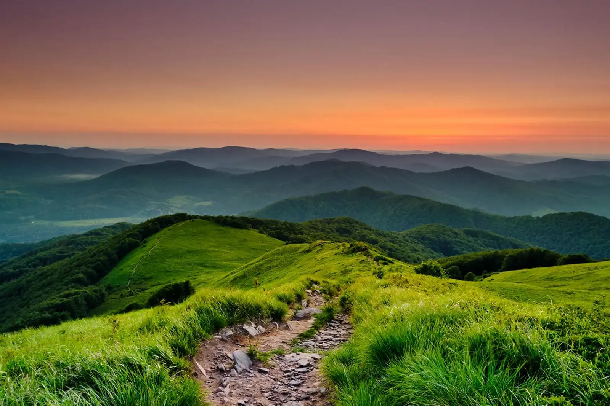
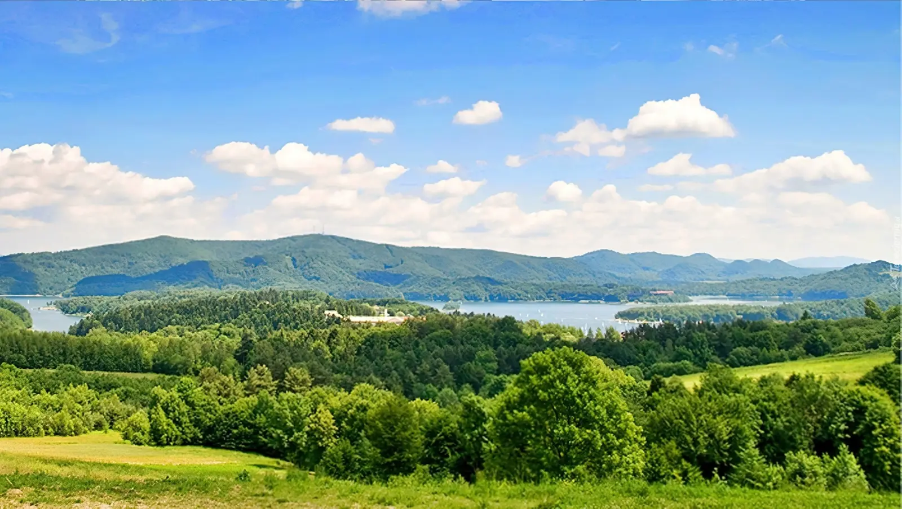

Wyprawa dla tych, którzy chcą odetchnąć głębiej i spojrzeć dalej — w najdzikszy zakątek Polski, gdzie horyzont zdaje się nie mieć końca.
Dlaczego Bieszczady
Bieszczady to jedne z niewielu miejsc w Polsce, gdzie cisza ma swoją wagę. Nie ma tu kolejek do szczytów ani zatłoczonych deptaków — jest przestrzeń, która pozwala odetchnąć głębiej niż gdziekolwiek indziej w kraju.
To góry do przeżywania, nie do zdobywania. Połoniny — rozległe łąki ponad linią lasu — otwierają się nagle po kilku godzinach wędrówki i dają widok na horyzont, który zdaje się nie mieć końca. Wiosną pachną krokusami, latem trawami, jesienią bukowymi liśćmi. Zimą są puste i białe.
Do tego dochodzi warstwa historii — opuszczone wsie łemkowskie, samotne cerkwie, stare sady, które wciąż owocują, choć nikt ich nie pielęgnuje. Bieszczady to region, w którym krajobraz pamięta więcej niż przewodniki.
Co zobaczyć
Bieszczady dzielą się na dwie części: Bieszczady Wysokie (południowy wschód, z połoninami) oraz Beskid Niski (bardziej leśny, z cerkwiami). Jeśli masz czas, zaplanuj oba.
- Połonina Wetlińska — najbardziej znana, z Chatką Puchatka, schroniskiem z 1950 roku. Wejście z Wetliny zajmuje 2–3 godziny, trasa umiarkowanie trudna, ale wymaga kondycji.
- Połonina Caryńska — mniej zatłoczona siostra Wetlińskiej. Wejście z Brzegów Górnych lub Ustrzyk Górnych, z widokiem na Tarnicę i Wetlińską.
- Tarnica (1346 m) — najwyższy szczyt polskich Bieszczadów. Podejście z Wołosatego zajmuje około dwóch godzin, w sezonie bardzo popularne — warto wyjść o świcie.
- Wielka Rawka — mniej znana alternatywa, z widokiem na Ukrainę i Słowację. Podejście z Komańczy.
- Cerkwie w Smolniku, Chmielu, Turzańsku i Radoszycach — drewniane świątynie z XVIII i XIX wieku, część Szlaku Architektury Drewnianej. Cerkiew w Turzańsku należy do grupy wpisanej na listę UNESCO.
- Jezioro Solińskie i zapora — największy sztuczny zbiornik w Polsce. Warto przejść się po zaporze i popłynąć w rejs po jeziorze.
- Bieszczadzka Kolejka Leśna — wąskotorówka z Cisnej do Przysłupia, kursuje od maja do października.
- Zagroda żubrów w Mucznem — jedno z niewielu miejsc w Polsce, gdzie zobaczysz żubry na własne oczy. Wstęp wolny.
Kiedy jechać
Bieszczady mają cztery pory roku, ale dwie są szczególnie warte uwagi.
- Wrzesień i październik — najlepszy czas. Tłumy znikają po wakacjach, buki czerwienieją, powietrze jest wyjątkowo przejrzyste. To również początek rykowiska jeleni — wieczorami słychać nawoływania samców w dolinach.
- Maj i czerwiec — połoniny kwitną, choć bywa mokro. Krokusy w pełnym rozkwicie na początku maja.
Lipiec i sierpień to szczyt sezonu — tłumy na Tarnicę i Wetlińską, parkingi zapełniają się już o ósmej rano. Jeśli musisz jechać w wakacje, wybierz dni powszednie i wychodź na szlak przed świtem.
Zima w Bieszczadach jest surowa — od grudnia do marca śnieg leży w dolinach, a połoniny bywają niedostępne. Dla tych, którzy szukają absolutnej ciszy, to jednak najlepszy czas.
Jak dotrzeć
Bieszczady leżą na samym końcu Polski — dotarcie tu zajmuje trochę czasu, ale to część doświadczenia.
- Samochodem: z Krakowa około 4–5 godzin (przez Nowy Sącz i Krosno), z Warszawy 6–7 godzin, z Rzeszowa 2 godziny. Drogi 84 i 28 prowadzą przez małe miasteczka, które warto zwiedzić po drodze — Sanok i Lesko.
- Pociągiem: najbliższe stacje PKP to Zagórz i Sanok. Dalej autobusem PKS do Cisnej, Wetliny lub Ustrzyk Górnych. Kursy są rzadkie, sprawdź rozkład z wyprzedzeniem.
- Autobusem: z Rzeszowa i Krakowa do Ustrzyk Górnych, przez Sanok i Lesko.
Komunikacja publiczna w samych Bieszczadach jest słaba — samochód lub rower znacznie ułatwia poruszanie się między wioskami.
Ile czasu potrzebujesz
Minimum to trzy dni, żeby zobaczyć Połoninę Wetlińską, Tarnicę i Solinę bez pośpiechu. Tydzień pozwala dodać Beskid Niski, cerkwie i kilka dni w jednej z wiosek — na prawdziwe slow travel.
Jeśli chcesz przejść kilka połonin (Wetlińska, Caryńska, Rawka, Tarnica), zaplanuj 5–6 dni. Szlaki są dobrze oznakowane, ale wymagają kondycji — wejście na połoninę to 500–700 metrów przewyższenia.
Co zjeść i gdzie spać
Kuchnia bieszczadzka to mieszanka wpływów łemkowskich, huculskich i polskich. Warto spróbować:
- Proziaki — placki z mąki i sody, podawane z masłem czosnkowym lub słoniną.
- Fuczki — placki z kapusty, podobne do łemkowskich hryczanyków.
- Kwaśnica — zupa z kiszonej kapusty z mięsem, rozgrzewająca po długiej wędrówce.
- Pstrąg z grilla — z lokalnych hodowli, dostępny w wielu karczmach przydrożnych.
Bazy noclegowe: Wetlina, Cisna i Ustrzyki Górne to klasyczne punkty startowe. Schroniska PTTK (w Wetlinie, na Połoninie Wetlińskiej) są tanie, ale w sezonie trzeba rezerwować z kilkutygodniowym wyprzedzeniem. Agroturystyka w mniejszych wioskach — Smolnik, Zatwarnica, Lutowiska — oferuje więcej spokoju.
Praktyczne wskazówki
- Bilety do Bieszczadzkiego Parku Narodowego są obowiązkowe na szlakach w BPN (Tarnica, Połonina Caryńska). Kup online lub w kasach przy wejściach — w Wołosatem i Ustrzykach Górnych.
- Pogoda zmienia się szybko — nawet w lipcu warto mieć kurtkę przeciwdeszczową i ciepłą bluzę. Na połoninach zawsze wieje.
- Parkingi w sezonie zapełniają się bardzo szybko — przyjazd po dziewiątej rano w lipcu oznacza problem ze znalezieniem miejsca.
- Zasięg telefonu — w wielu dolinach i na szlakach nie ma go wcale. Pobierz mapy offline przed wyjazdem.
- Gotówka — nie każdy sklep i karczma w małych wioskach akceptuje karty. Miej przy sobie trochę złotych.
- Rezerwacje — schroniska i popularne agroturystyki w sezonie trzeba rezerwować 2–3 tygodnie wcześniej.